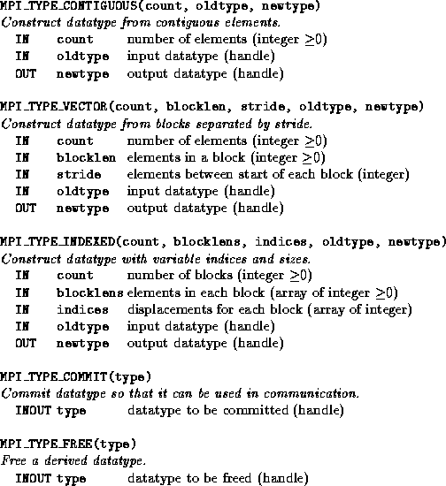
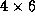
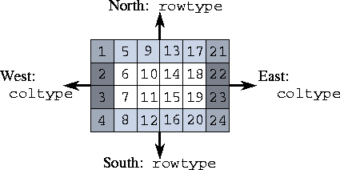

![[DBPP]](pictures//asm_color_tiny.gif)


![[Search]](pictures//search_motif.gif)
In this section, we discuss MPI's derived datatype mechanism. We also list MPI features not covered in this book.
In earlier sections of this chapter, MPI routines have been used to communicate simple datatypes, such as integers and reals, or arrays of these types. The final set of MPI functions that we describe implements derived types, a mechanism allowing noncontiguous data elements to be grouped together in a message. This mechanism permits us to avoid data copy operations. Without it, the sending of a row of a two-dimensional array stored by columns would require that these noncontiguous elements be copied into a buffer before being sent.

Figure 8.12: MPI derived datatype functions.
Three sets of functions are applied for manipulating derived types. Derived datatypes are constructed by applying constructor functions to simple or derived types; we describe three constructor functions MPI_TYPE_CONTIGUOUS, MPI_TYPE_VECTOR, and MPI_TYPE_INDEXED. The commit function, MPI_TYPE_COMMIT, must be applied to a derived type before it can be used in a communication operation. Finally, the free function, MPI_TYPE_FREE, should be applied to a derived type after use, in order to reclaim storage. These functions are summarized in Figure 8.12.
The constructor MPI_TYPE_CONTIGUOUS is used to define a type comprising one or more contiguous data elements. A call of the form MPI_TYPE_CONTIGUOUS(count, oldtype, newtype)
defines a derived type newtype comprising count consecutive occurrences of datatype oldtype. For example, the sequence of calls
call MPI_TYPE_CONTIGUOUS(10, MPI_REAL, tenrealtype, ierr) call MPI_TYPE_COMMIT(tenrealtype, ierr) call MPI_SEND(data, 1, tenrealtype, dest, tag, $ MPI_COMM_WORLD, ierr) CALL MPI_TYPE_FREE(tenrealtype, ierr)is equivalent to the following single call.
call MPI_SEND(data, 10, MPI_REAL, dest, tag, $ MPI_COMM_WORLD, ierr)Both code fragments send a sequence of ten contiguous real values at location data to process dest.
The constructor MPI_TYPE_VECTOR is used to define a type comprising one or more blocks of data elements separated by a constant stride in an array. A call of the form
MPI_TYPE_VECTOR(count, blocklen, stride, oldtype, newtype)
defines a derived type newtype comprising count consecutive blocks of data elements with datatype oldtype, with each block containing blocklen data elements, and the start of successive blocks separated by stride data elements. For example, the sequence of calls
float data[1024]; MPI_Datatype floattype; MPI_Type_vector(10, 1, 32, MPI_FLOAT, &floattype); MPI_Type_commit(&floattype); MPI_Send(data, 1, floattype, dest, tag, MPI_COMM_WORLD); MPI_Type_free(&floattype);is equivalent to the following code.
float data[1024], buff[10]; for (i=0; i<10; i++) buff[i] = data[i*32]; MPI_Send(buff, 10, MPI_FLOAT, dest, tag, MPI_COMM_WORLD);Both send ten floating-point numbers from locations data[0], data[32],..., data[288].
 . Finite Difference Stencil:
. Finite Difference Stencil:
Program 8.8 uses derived types to communicate the north and south rows and the west and east columns of a  Fortran array. As illustrated in Figure 8.13, a column of this array is stored in contiguous locations and can be accessed by using a contiguous derived type. On the other hand, row i of this array (comprising elements array( i ,1), ( i ,2), ... , ( i ,6)) is located in elements i , i +4, ..., i +20. As these elements are not stored in contiguous locations, a call to MPI_TYPE_VECTOR is used to define the appropriate type, rowtype.
Program 8.8 frees the derived types that it defines immediately after they are used. In practice, a type might be reused many times before being freed.

Figure 8.13: A finite difference grid. Areas to be sent
to west, east, north, and south neighbors are
highlighted.
The third constructor, MPI_TYPE_INDEXED, is used to define a type comprising one or more blocks of a primitive or previously defined datatype, where block lengths and the displacements between blocks are specified in arrays. A call of the form
MPI_TYPE_INDEXED(count, lengths, indices, oldtype, newtype)
defines a derived type newtype comprising count consecutive blocks of data elements with datatype oldtype, with block i having a displacement of indices( i ) data elements and containing lengths( i ) data elements.
 .
. Fock Matrix Problem:
Fock Matrix Problem:
In Example 8.4 and Program 8.6, we developed an implementation for a Fock matrix task that receives read requests containing the address of a single data value. A more realistic program might support messages comprising len/2 indices followed by len/2 block lengths. The MPI_TYPE_INDEXED constructor can then be used to return the required values, as follows.
call MPI_TYPE_INDEXED(len/2, inbuf(len/2+1), inbuf(1),
$ MPI_INTEGER, focktype, ierr)
call MPI_TYPE_COMMIT(focktype, ierr);
call MPI_SEND(data, 1, focktype, source, MPI_COMM_WORLD,
ierr)
call MPI_TYPE_FREE(focktype, ierr)
An alternative approach that does not use the constructor is to accumulate the values that are to be returned in a buffer. The relative efficiency of the two approaches depends on several factors, including the amount of data to be transferred and the capabilities of the computer used to execute the program.
For simplicity, we have focused on a subset of MPI in this chapter. Of necessity, numerous subtleties have been omitted in this brief description. Also, the following MPI features have not been covered.
© Copyright 1995 by Ian Foster